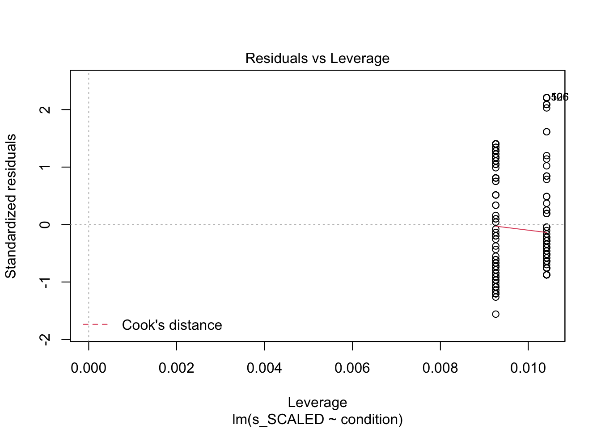
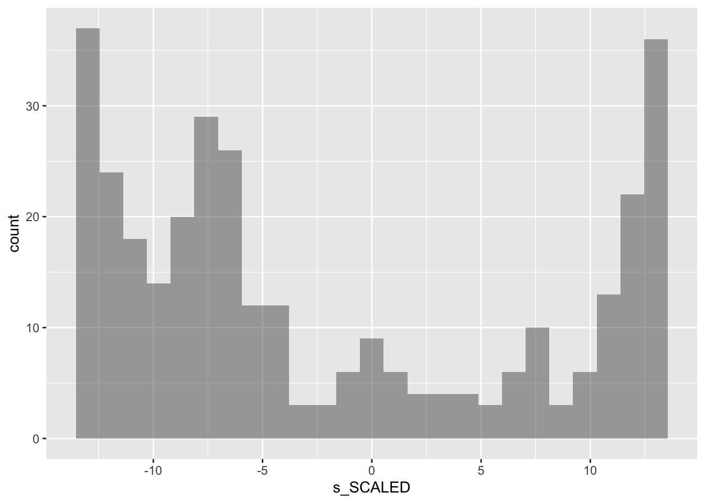

#IMPORT DATA df_items <-read_rds('data/2-scored-data/sgc3a_scored_items.rds')df_subjects <-read_rds('data/2-scored-data/sgc3a_scored_participants.rds')#SEPARATE ITEM DATA BY QUESTION TYPEdf_scaffold <- df_items %>%filter(q <6)df_test <- df_items %>%filter(q >6) %>%filter (q %nin%c(6,9))df_nondiscrim <- df_items %>%filter (q %in%c(6,9))
4.1 Cumulative Performance
Overall does the impasse condition affect performance on the graph comprehension task?
4.1.1 Cumulative Score By Condition
Cumulative scores indicate the response accuracy by a particular participant across all discriminant items (n=13) in the graph comprehension task.
CODE
#VISUALIZE distribution of response accuracy across SUBJECTS#HISTOGRAMstats = df_subjects %>%group_by(condition, mode) %>% dplyr::summarise(mean =mean(s_ABS))gf_density(~s_ABS, data = df_subjects) %>%gf_facet_grid(condition~mode, labeller = label_both) %>%gf_lims(x =c(0, 13)) %>%gf_vline(data = stats, xintercept =~mean, color ="red") +labs(x ="Cumulative Absolute Score",y ="proportion of subjects",title ="Subject Cumulative Score (Absolute)",subtitle ="Score distributions are comparable across modalities and different across conditions") +theme_minimal()
Does the IMPASSE condition yield higher scores?
4.1.1.1 Linear Regression
To address this question we assess how much variance in cumulative (absolute) score is explained by experimental condition by utilizing OLS linear regression, predicting absolute score from condition.
CODE
#SCORE predicted by CONDITIONm1 <-lm(s_ABS ~ condition, data = df_subjects %>%filter(mode=="lab-synch"))paste("Model")
[1] "Model"
CODE
summary(m1)
Call:
lm(formula = s_ABS ~ condition, data = df_subjects %>% filter(mode ==
"lab-synch"))
Residuals:
Min 1Q Median 3Q Max
-5.44 -2.68 -2.68 4.31 10.32
Coefficients:
Estimate Std. Error t value Pr(>|t|)
(Intercept) 2.677 0.620 4.32 0.000031 ***
condition121 2.760 0.869 3.17 0.0019 **
---
Signif. codes: 0 '***' 0.001 '**' 0.01 '*' 0.05 '.' 0.1 ' ' 1
Residual standard error: 4.88 on 124 degrees of freedom
Multiple R-squared: 0.0752, Adjusted R-squared: 0.0677
F-statistic: 10.1 on 1 and 124 DF, p-value: 0.00189
CODE
paste("Partition Variance")
[1] "Partition Variance"
CODE
anova(m1)
Analysis of Variance Table
Response: s_ABS
Df Sum Sq Mean Sq F value Pr(>F)
condition 1 240 239.9 10.1 0.0019 **
Residuals 124 2951 23.8
---
Signif. codes: 0 '***' 0.001 '**' 0.01 '*' 0.05 '.' 0.1 ' ' 1
CODE
paste("Confidence Interval on Parameter Estimates")
For in-lab data collection an OLS linear regression predicting cumulative absolute score by experimental condition explains a statistically significant though small 7.5% variance in score (F(1,124) = 10.1, p < 0.01). The estimated beta coefficient (\(/beta\) = 2.76, 95% CI [1.04, 4.48]) predicts that participants in the impasse condition will on average score 2.76 points (21%) higher than those in the control condition.
CODE
#SCORE predicted by CONDITIONm1 <-lm(s_ABS ~ condition, data = df_subjects %>%filter(mode=="asynch"))paste("Model")
[1] "Model"
CODE
summary(m1)
Call:
lm(formula = s_ABS ~ condition, data = df_subjects %>% filter(mode ==
"asynch"))
Residuals:
Min 1Q Median 3Q Max
-4.58 -3.58 -2.30 3.42 10.70
Coefficients:
Estimate Std. Error t value Pr(>|t|)
(Intercept) 2.302 0.485 4.75 3.8e-06 ***
condition121 2.281 0.666 3.43 0.00074 ***
---
Signif. codes: 0 '***' 0.001 '**' 0.01 '*' 0.05 '.' 0.1 ' ' 1
Residual standard error: 4.75 on 202 degrees of freedom
Multiple R-squared: 0.0549, Adjusted R-squared: 0.0502
F-statistic: 11.7 on 1 and 202 DF, p-value: 0.000745
CODE
paste("Partition Variance")
[1] "Partition Variance"
CODE
anova(m1)
Analysis of Variance Table
Response: s_ABS
Df Sum Sq Mean Sq F value Pr(>F)
condition 1 264 264.5 11.7 0.00074 ***
Residuals 202 4554 22.5
---
Signif. codes: 0 '***' 0.001 '**' 0.01 '*' 0.05 '.' 0.1 ' ' 1
CODE
paste("Confidence Interval on Parameter Estimates")
For the online replication, an OLS linear regression model predicting cumulative absolute score by condition explains a statistically significant though small 5.5% of variance in absolute score (F(1,202) = 11.73, p < 0.001). The beta coefficient for condition indicates that on average, participants in the IMPASSE group scored 2.3 points higher on the task than those in the control condition (CI[0.97, 3.59]).
Note
From these models we can reasonably conclude that the impasse condition yielded a small but reliable improvement in performance across items in the graph reading task.
Model Diagnostics
CODE
check_model(m1)
4.1.1.2 Poisson Regression
The outcome variable absolute score is clearly not normal. As it represents the cumulative number of items a participant has answered correctly, we can consider it a type of count, (ie. count of the number of questions the participant got correct) and attempt to model it using a General Linear Model with the Poisson distribution (and the default log-link function).
We fitted a poisson model (estimated using ML) to predict s_ABS with condition (formula: s_ABS ~ condition). The model's explanatory power is substantial (Nagelkerke's R2 = 0.38). The model's intercept, corresponding to condition = 111, is at 0.98 (95% CI [0.83, 1.13], p < .001). Within this model:
- The effect of condition [121] is statistically significant and positive (beta = 0.71, 95% CI [0.53, 0.90], p < .001; Std. beta = 0.71, 95% CI [0.53, 0.90])
Standardized parameters were obtained by fitting the model on a standardized version of the dataset. 95% Confidence Intervals (CIs) and p-values were computed using
CODE
check_model(mp1)
CODE
#Which is a better fit? linear or poisson?compare_performance(m1,mp1)
Warning: When comparing models, please note that probably not all models were fit from
same data.
For in-lab data collection an OLS linear regression predicting scaled score by experimental condition explains a statistically significant and moderate 15% variance in score (F(1,124) = 22.7, p < 0.001). The estimated beta coefficient (\(/beta\) = 7.88, 95% CI [4.61, 11.2]) predicts that participants in the impasse condition will on average score around 8 points (31%) higher than those in the control condition.
CODE
#SCORE predicted by CONDITIONm1 <-lm(s_SCALED ~ condition, data = df_subjects %>%filter(mode=="asynch"))paste("Model")
[1] "Model"
CODE
summary(m1)
Call:
lm(formula = s_SCALED ~ condition, data = df_subjects %>% filter(mode ==
"asynch"))
Residuals:
Min 1Q Median 3Q Max
-13.16 -7.16 -3.02 7.12 18.62
Coefficients:
Estimate Std. Error t value Pr(>|t|)
(Intercept) -5.620 0.866 -6.49 6.5e-10 ***
condition121 6.777 1.190 5.70 4.3e-08 ***
---
Signif. codes: 0 '***' 0.001 '**' 0.01 '*' 0.05 '.' 0.1 ' ' 1
Residual standard error: 8.48 on 202 degrees of freedom
Multiple R-squared: 0.138, Adjusted R-squared: 0.134
F-statistic: 32.4 on 1 and 202 DF, p-value: 4.3e-08
CODE
paste("Partition Variance")
[1] "Partition Variance"
CODE
anova(m1)
Analysis of Variance Table
Response: s_SCALED
Df Sum Sq Mean Sq F value Pr(>F)
condition 1 2334 2334 32.4 4.3e-08 ***
Residuals 202 14536 72
---
Signif. codes: 0 '***' 0.001 '**' 0.01 '*' 0.05 '.' 0.1 ' ' 1
CODE
paste("Confidence Interval on Parameter Estimates")
For the online replication, an OLS linear regression model predicting scaled score by condition explains a statistically significant and moderate 14% of variance in absolute score (F(1,202) = 32.4, p < 0.001). The beta coefficient for condition indicates that on average, participants in the IMPASSE group scored 6.8 points higher on the task than those in the control condition (CI[4.43, 9.12]).
Note
From these models we can reasonably conclude that the impasse condition yields a reliable, moderate sized effect of improved interpretation on the graph reading tasks.
4.2 First Question
Does the impasse condition affect performance on the first item of the graph comprehension task?
4.3 Item-Level Performance
Individual differences with a mixed model.
4.4 Model Peeking
TODO
multiple regression with condition and response time
CODE
library(supernova)
Attaching package: 'supernova'
The following object is masked from 'package:scales':
number
CODE
library(report)library(lmerTest)
Loading required package: lme4
Loading required package: Matrix
Attaching package: 'Matrix'
The following objects are masked from 'package:tidyr':
expand, pack, unpack
Registered S3 methods overwritten by 'lme4':
method from
cooks.distance.influence.merMod car
influence.merMod car
dfbeta.influence.merMod car
dfbetas.influence.merMod car
Attaching package: 'lmerTest'
The following object is masked from 'package:lme4':
lmer
The following object is masked from 'package:stats':
step
CODE
library(lme4)m1 <-lm( s_SCALED ~ condition, data = df_subjects %>%filter(mode=='asynch'))m1
Call:
lm(formula = s_SCALED ~ condition, data = df_subjects %>% filter(mode ==
"asynch"))
Residuals:
Min 1Q Median 3Q Max
-13.16 -7.16 -3.02 7.12 18.62
Coefficients:
Estimate Std. Error t value Pr(>|t|)
(Intercept) -5.620 0.866 -6.49 6.5e-10 ***
condition121 6.777 1.190 5.70 4.3e-08 ***
---
Signif. codes: 0 '***' 0.001 '**' 0.01 '*' 0.05 '.' 0.1 ' ' 1
Residual standard error: 8.48 on 202 degrees of freedom
Multiple R-squared: 0.138, Adjusted R-squared: 0.134
F-statistic: 32.4 on 1 and 202 DF, p-value: 4.3e-08
CODE
anova(m1)
Analysis of Variance Table
Response: s_SCALED
Df Sum Sq Mean Sq F value Pr(>F)
condition 1 2334 2334 32.4 4.3e-08 ***
Residuals 202 14536 72
---
Signif. codes: 0 '***' 0.001 '**' 0.01 '*' 0.05 '.' 0.1 ' ' 1
CODE
superanova(m1)
Analysis of Variance Table (Type III SS)
Model: s_SCALED ~ condition
SS df MS F PRE p
----- --------------- | --------- --- -------- ------ ------ -----
Model (error reduced) | 2334.346 1 2334.346 32.439 0.1384 .0000
Error (from model) | 14536.196 202 71.961
----- --------------- | --------- --- -------- ------ ------ -----
Total (empty model) | 16870.543 203 83.106
CODE
plot(m1)

CODE
gf_histogram(~s_SCALED, data = df_subjects)

CODE
gf_histogram(~m1$residuals)
CODE
#Assess assumption of independence of errors#DW statistic should be close to 2library(car)
Loading required package: carData
Attaching package: 'car'
The following object is masked from 'package:dplyr':
recode
The following object is masked from 'package:purrr':
some
CODE
durbinWatsonTest(m1)
lag Autocorrelation D-W Statistic p-value
1 -0.0134 2.01 0.848
Alternative hypothesis: rho != 0
CODE
#Test for equality of variance#H0 is equality; p > 0.05 infer you can't reject nullleveneTest(m1)
Levene's Test for Homogeneity of Variance (center = median)
Df F value Pr(>F)
group 1 5.4 0.021 *
202
---
Signif. codes: 0 '***' 0.001 '**' 0.01 '*' 0.05 '.' 0.1 ' ' 1
A simple linear regression model predicting cumulative scaled score (at subject level) by condition explains 13% of the total variance, F(1,329) = 47.8, p < 0.001. The model predicts that participants in the impasse condition will score on average 6.38 points higher than those in the control condition, 95% CI [4.56, 8.19].
CODE
t.test(s_SCALED ~ condition, data = df_subjects)
Welch Two Sample t-test
data: s_SCALED by condition
t = -7, df = 322, p-value = 1e-12
alternative hypothesis: true difference in means is not equal to 0
95 percent confidence interval:
-9.10 -5.29
sample estimates:
mean in group 111 mean in group 121
-5.82 1.38
CODE
#%>% report()
CODE
# report_participants(df_subjects)m1 %>%report()
We fitted a linear model (estimated using OLS) to predict s_SCALED with condition (formula: s_SCALED ~ condition). The model explains a statistically significant and moderate proportion of variance (R2 = 0.14, F(1, 202) = 32.44, p < .001, adj. R2 = 0.13). The model's intercept, corresponding to condition = 111, is at -5.62 (95% CI [-7.33, -3.91], t(202) = -6.49, p < .001). Within this model:
- The effect of condition [121] is statistically significant and positive (beta = 6.78, 95% CI [4.43, 9.12], t(202) = 5.70, p < .001; Std. beta = 0.74, 95% CI [0.49, 1.00])
Standardized parameters were obtained by fitting the model on a standardized version of the dataset. 95% Confidence Intervals (CIs) and p-values were computed using the Wald approximation.
CODE
anova(m1) %>%report()
For one-way between subjects designs, partial eta squared is equivalent to eta squared.
Returning eta squared.
The ANOVA suggests that:
- The main effect of condition is statistically significant and medium (F(1, 202) = 32.44, p < .001; Eta2 = 0.14, 95% CI [0.07, 1.00])
CODE
#significant intercept means that group is significantly different than zero
CODE
#logistic regression on on scaled df_subjects because residuals not normal in lm?mlog <-glm(s_SCALED ~ condition , data = df_subjects, family = gaussian)summary(mlog)
Call:
glm(formula = s_SCALED ~ condition, family = gaussian, data = df_subjects)
Deviance Residuals:
Min 1Q Median 3Q Max
-13.38 -7.18 -3.28 8.50 18.82
Coefficients:
Estimate Std. Error t value Pr(>|t|)
(Intercept) -5.820 0.698 -8.34 2.1e-15 ***
condition121 7.198 0.967 7.45 8.6e-13 ***
---
Signif. codes: 0 '***' 0.001 '**' 0.01 '*' 0.05 '.' 0.1 ' ' 1
(Dispersion parameter for gaussian family taken to be 77)
Null deviance: 29508 on 329 degrees of freedom
Residual deviance: 25242 on 328 degrees of freedom
AIC: 2374
Number of Fisher Scoring iterations: 2
CODE
report(mlog)
We fitted a linear model (estimated using ML) to predict s_SCALED with condition (formula: s_SCALED ~ condition). The model's explanatory power is moderate (R2 = 0.14). The model's intercept, corresponding to condition = 111, is at -5.82 (95% CI [-7.19, -4.45], t(328) = -8.34, p < .001). Within this model:
- The effect of condition [121] is statistically significant and positive (beta = 7.20, 95% CI [5.30, 9.09], t(328) = 7.45, p < .001; Std. beta = 0.76, 95% CI [0.56, 0.96])
Standardized parameters were obtained by fitting the model on a standardized version of the dataset. 95% Confidence Intervals (CIs) and p-values were computed using
CODE
#logistic regression on niceABS by condition#pretends that questions are independent and not from same subjects INVALIDmlog <-glm(score_niceABS ~ condition , data = df_items %>%filter(q<6), family =binomial())summary(mlog)
Call:
glm(formula = score_niceABS ~ condition, family = binomial(),
data = df_items %>% filter(q < 6))
Deviance Residuals:
Min 1Q Median 3Q Max
-0.980 -0.980 -0.649 1.389 1.823
Coefficients:
Estimate Std. Error z value Pr(>|z|)
(Intercept) -1.4508 0.0907 -15.99 <2e-16 ***
condition121 0.9672 0.1147 8.43 <2e-16 ***
---
Signif. codes: 0 '***' 0.001 '**' 0.01 '*' 0.05 '.' 0.1 ' ' 1
(Dispersion parameter for binomial family taken to be 1)
Null deviance: 1986.2 on 1649 degrees of freedom
Residual deviance: 1911.3 on 1648 degrees of freedom
AIC: 1915
Number of Fisher Scoring iterations: 4
CODE
report(mlog)
We fitted a logistic model (estimated using ML) to predict score_niceABS with condition (formula: score_niceABS ~ condition). The model's explanatory power is weak (Tjur's R2 = 0.04). The model's intercept, corresponding to condition = 111, is at -1.45 (95% CI [-1.63, -1.28], p < .001). Within this model:
- The effect of condition [121] is statistically significant and positive (beta = 0.97, 95% CI [0.74, 1.19], p < .001; Std. beta = 0.97, 95% CI [0.74, 1.19])
Standardized parameters were obtained by fitting the model on a standardized version of the dataset. 95% Confidence Intervals (CIs) and p-values were computed using
CODE
m2 <-lm( s_NABS ~ condition, data = df_subjects)m2
Call:
lm(formula = s_NABS ~ condition, data = df_subjects)
Residuals:
Min 1Q Median 3Q Max
-4.92 -3.67 -2.47 4.08 10.53
Coefficients:
Estimate Std. Error t value Pr(>|t|)
(Intercept) 2.468 0.384 6.43 4.4e-10 ***
condition121 2.456 0.531 4.62 5.5e-06 ***
---
Signif. codes: 0 '***' 0.001 '**' 0.01 '*' 0.05 '.' 0.1 ' ' 1
Residual standard error: 4.82 on 328 degrees of freedom
Multiple R-squared: 0.0611, Adjusted R-squared: 0.0583
F-statistic: 21.4 on 1 and 328 DF, p-value: 5.49e-06
CODE
anova(m2)
Analysis of Variance Table
Response: s_NABS
Df Sum Sq Mean Sq F value Pr(>F)
condition 1 497 497 21.4 5.5e-06 ***
Residuals 328 7629 23
---
Signif. codes: 0 '***' 0.001 '**' 0.01 '*' 0.05 '.' 0.1 ' ' 1
CODE
supernova(m2)
Analysis of Variance Table (Type III SS)
Model: s_NABS ~ condition
SS df MS F PRE p
----- --------------- | -------- --- ------- ------ ------ -----
Model (error reduced) | 496.765 1 496.765 21.357 0.0611 .0000
Error (from model) | 7629.359 328 23.260
----- --------------- | -------- --- ------- ------ ------ -----
Total (empty model) | 8126.124 329 24.699
A simple linear regression model predicting cumulative absolute score by condition explains 5% of variance, F(1,328) = 16.36, p < 0.001. The model predicts that subjects in the impasse condition will score on average 2 points higher than those in the control condition (Beta = 2.02, 95% CI [1.04, 3.00])
CODE
report(m2)
We fitted a linear model (estimated using OLS) to predict s_NABS with condition (formula: s_NABS ~ condition). The model explains a statistically significant and weak proportion of variance (R2 = 0.06, F(1, 328) = 21.36, p < .001, adj. R2 = 0.06). The model's intercept, corresponding to condition = 111, is at 2.47 (95% CI [1.71, 3.22], t(328) = 6.43, p < .001). Within this model:
- The effect of condition [121] is statistically significant and positive (beta = 2.46, 95% CI [1.41, 3.50], t(328) = 4.62, p < .001; Std. beta = 0.49, 95% CI [0.28, 0.70])
Standardized parameters were obtained by fitting the model on a standardized version of the dataset. 95% Confidence Intervals (CIs) and p-values were computed using the Wald approximation.
CODE
m.m1 <-lmer( score_SCALED ~ (1+ condition|subject), data = df_items)
Warning: Model failed to converge with 1 negative eigenvalue: -8.1e-04
CODE
m.m1
Linear mixed model fit by REML ['lmerModLmerTest']
Formula: score_SCALED ~ (1 + condition | subject)
Data: df_items
REML criterion at convergence: 9773
Random effects:
Groups Name Std.Dev. Corr
subject (Intercept) 0.632
condition121 0.827 -0.71
Residual 0.591
Number of obs: 4950, groups: subject, 330
Fixed Effects:
(Intercept)
-0.0617
CODE
summary(m.m1)
Linear mixed model fit by REML. t-tests use Satterthwaite's method [
lmerModLmerTest]
Formula: score_SCALED ~ (1 + condition | subject)
Data: df_items
REML criterion at convergence: 9773
Scaled residuals:
Min 1Q Median 3Q Max
-2.9664 -0.6738 -0.0461 0.5889 2.7646
Random effects:
Groups Name Variance Std.Dev. Corr
subject (Intercept) 0.400 0.632
condition121 0.685 0.827 -0.71
Residual 0.349 0.591
Number of obs: 4950, groups: subject, 330
Fixed effects:
Estimate Std. Error df t value Pr(>|t|)
(Intercept) -0.0617 0.0344 326.4131 -1.79 0.074 .
---
Signif. codes: 0 '***' 0.001 '**' 0.01 '*' 0.05 '.' 0.1 ' ' 1
CODE
report(m.m1)
We fitted a constant (intercept-only) linear mixed model (estimated using REML and nloptwrap optimizer) to predict score_SCALED (formula: score_SCALED ~ 1). The model included condition and subject as random effects (formula: ~1 + condition | subject). . The model's intercept is at -0.06 (95% CI [-0.13, 5.71e-03], t(4945) = -1.79, p = 0.073). Within this model:
- ()
Standardized parameters were obtained by fitting the model on a standardized version of the dataset. 95% Confidence Intervals (CIs) and p-values were computed using
CODE
m.m2 <-lmer( score_SCALED ~ (1+ condition|q), data = df_items)m.m2
Linear mixed model fit by REML ['lmerModLmerTest']
Formula: score_SCALED ~ (1 + condition | q)
Data: df_items
REML criterion at convergence: 11500
Random effects:
Groups Name Std.Dev. Corr
q (Intercept) 0.602
condition121 0.530 -0.93
Residual 0.765
Number of obs: 4950, groups: q, 15
Fixed Effects:
(Intercept)
0.172
CODE
summary(m.m2)
Linear mixed model fit by REML. t-tests use Satterthwaite's method [
lmerModLmerTest]
Formula: score_SCALED ~ (1 + condition | q)
Data: df_items
REML criterion at convergence: 11500
Scaled residuals:
Min 1Q Median 3Q Max
-1.972 -0.794 -0.093 0.887 2.164
Random effects:
Groups Name Variance Std.Dev. Corr
q (Intercept) 0.363 0.602
condition121 0.281 0.530 -0.93
Residual 0.585 0.765
Number of obs: 4950, groups: q, 15
Fixed effects:
Estimate Std. Error df t value Pr(>|t|)
(Intercept) 0.1717 0.0575 14.0014 2.98 0.0099 **
---
Signif. codes: 0 '***' 0.001 '**' 0.01 '*' 0.05 '.' 0.1 ' ' 1
CODE
report(m.m2)
We fitted a constant (intercept-only) linear mixed model (estimated using REML and nloptwrap optimizer) to predict score_SCALED (formula: score_SCALED ~ 1). The model included condition and q as random effects (formula: ~1 + condition | q). . The model's intercept is at 0.17 (95% CI [0.06, 0.28], t(4945) = 2.98, p = 0.003). Within this model:
- ()
Standardized parameters were obtained by fitting the model on a standardized version of the dataset. 95% Confidence Intervals (CIs) and p-values were computed using
Warning in checkConv(attr(opt, "derivs"), opt$par, ctrl = control$checkConv, :
Model failed to converge with max|grad| = 0.00208782 (tol = 0.002, component 1)
CODE
m.m3 %>%summary()
Linear mixed model fit by REML. t-tests use Satterthwaite's method [
lmerModLmerTest]
Formula: score_SCALED ~ (1 + condition | q) + (1 + condition | subject)
Data: df_items
REML criterion at convergence: 8593
Scaled residuals:
Min 1Q Median 3Q Max
-3.724 -0.644 -0.016 0.697 3.599
Random effects:
Groups Name Variance Std.Dev. Corr
subject (Intercept) 0.339 0.583
condition121 0.218 0.467 -0.46
q (Intercept) 0.268 0.517
condition121 0.197 0.443 -0.91
Residual 0.266 0.516
Number of obs: 4950, groups: subject, 330; q, 15
Fixed effects:
Estimate Std. Error df t value Pr(>|t|)
(Intercept) 0.117 0.071 24.208 1.65 0.11
optimizer (nloptwrap) convergence code: 0 (OK)
Model failed to converge with max|grad| = 0.00208782 (tol = 0.002, component 1)
CODE
m.m3 %>%report()
We fitted a constant (intercept-only) linear mixed model (estimated using REML and nloptwrap optimizer) to predict score_SCALED (formula: score_SCALED ~ 1). The model included condition, q and subject as random effects (formula: list(~1 + condition | q, ~1 + condition | subject)). . The model's intercept is at 0.12 (95% CI [-0.02, 0.26], t(4942) = 1.65, p = 0.098). Within this model:
- ()
Standardized parameters were obtained by fitting the model on a standardized version of the dataset. 95% Confidence Intervals (CIs) and p-values were computed using
---# title: 'Exploration'subtitle: 'Study SGC3A | 4 Modelling'# author: 'Amy Rae Fox'# always_allow_html: true # header-includes:# - \usepackage{amsmath}# output:# html_document:# theme: yeti# code_folding: hide# fig_caption: yes# number_sections: yes# toc: yes# toc_depth: 4# toc_float:# collapsed: no# smooth_scroll: yes# pdf_document: # toc: true# toc_depth: 3# latex_engine: xelatex# font-family: "DejaVu Sans"# mainfont: "DejaVu Sans"---\newpage# Modelling {#sec-SGC3A-modelling}TODO - port modelling from 3_exploration into 4_modelling```{r}#| label: SETUP#| echo : true#| warning : false#| message : falselibrary(tidyverse) #ALL THE THINGSlibrary(Hmisc) # %nin% operatorlibrary(ggpubr) #arrange plotslibrary(ggformula) #easy graphslibrary(report) #easystats reportinglibrary(see) #easystats visualizationlibrary(performance) #easystats model diagnostics#set some output optionslibrary(dplyr, warn.conflicts =FALSE)options(dplyr.summarise.inform =FALSE)options(ggplot2.summarise.inform =FALSE)options(scipen=1, digits=3)```*The purpose of this notebook is explore the distribution of dependent variables for Study SGC3A.*+-------------------------+---------------+| Pre-Requisite | Followed By |+=========================+===============+| 1_sgc3A_harmonize.qmd\ | \| || 2_sgc3A_rescoring.qmd\ | || 3_sgc3A_exploration.qmd | |+-------------------------+---------------+```{r}#| label: IMPORT-DATA#| echo : true#| warning : false#| message : false#IMPORT DATA df_items <-read_rds('data/2-scored-data/sgc3a_scored_items.rds')df_subjects <-read_rds('data/2-scored-data/sgc3a_scored_participants.rds')#SEPARATE ITEM DATA BY QUESTION TYPEdf_scaffold <- df_items %>%filter(q <6)df_test <- df_items %>%filter(q >6) %>%filter (q %nin%c(6,9))df_nondiscrim <- df_items %>%filter (q %in%c(6,9))```## Cumulative Performance_Overall_ does the impasse condition affect performance on the graph comprehension task? ### Cumulative Score By ConditionCumulative scores indicate the response accuracy by a particular participant across all discriminant items (n=13) in the graph comprehension task.```{r}#| label: VIS-SUBJECT-ABS#VISUALIZE distribution of response accuracy across SUBJECTS#HISTOGRAMstats = df_subjects %>%group_by(condition, mode) %>% dplyr::summarise(mean =mean(s_ABS))gf_density(~s_ABS, data = df_subjects) %>%gf_facet_grid(condition~mode, labeller = label_both) %>%gf_lims(x =c(0, 13)) %>%gf_vline(data = stats, xintercept =~mean, color ="red") +labs(x ="Cumulative Absolute Score",y ="proportion of subjects",title ="Subject Cumulative Score (Absolute)",subtitle ="Score distributions are comparable across modalities and different across conditions") +theme_minimal()```**Does the IMPASSE condition yield higher scores?**#### Linear RegressionTo address this question we assess how much variance in cumulative (absolute) score is explained by experimental condition by utilizing OLS linear regression, predicting absolute score from condition.```{r}#| label: MODEL-cumulative-score-LAB#SCORE predicted by CONDITIONm1 <-lm(s_ABS ~ condition, data = df_subjects %>%filter(mode=="lab-synch"))paste("Model")summary(m1)paste("Partition Variance")anova(m1)paste("Confidence Interval on Parameter Estimates")confint(m1)# report(m1) #sanity check```**For in-lab data collection** an OLS linear regression predicting cumulative absolute score by experimental condition explains a statistically significant though small 7.5% variance in score (F(1,124) = 10.1, p \< 0.01). The estimated beta coefficient ($/beta$ = 2.76, 95% CI \[1.04, 4.48\]) predicts that participants in the impasse condition will on average score 2.76 points (21%) higher than those in the control condition.```{r}#| label: MODEL-cumulative-score-ONLINE#SCORE predicted by CONDITIONm1 <-lm(s_ABS ~ condition, data = df_subjects %>%filter(mode=="asynch"))paste("Model")summary(m1)paste("Partition Variance")anova(m1)paste("Confidence Interval on Parameter Estimates")confint(m1)#report(m1) #sanity check```**For the online replication**, an OLS linear regression model predicting cumulative absolute score by condition explains a statistically significant though small 5.5% of variance in absolute score (F(1,202) = 11.73, p \< 0.001). The beta coefficient for condition indicates that on average, participants in the IMPASSE group scored 2.3 points higher on the task than those in the control condition (CI\[0.97, 3.59\]).::: callout-note**From these models we can reasonably conclude that the impasse condition yielded a small but reliable improvement in performance across items in the graph reading task.**:::**Model Diagnostics**```{r}#| label: DIAGNOSTICS-ABSCORE-LINEARcheck_model(m1)```#### Poisson RegressionThe outcome variable absolute score is clearly not normal. As it represents the cumulative number of items a participant has answered correctly, we can consider it a type of *count*, (ie. count of the number of questions the participant got correct) and attempt to model it using a General Linear Model with the Poisson distribution (and the default log-link function).```{r}# library('fitdistrplus')# plot(fitdist(df_subjects$s_ABS,"pois"))# plot(fitdist(df_subjects$s_ABS,"norm"))# plot(fitdist(df_subjects$s_ABS,"beta"))# # # plotdist(df_subjects$s_ABS, histo = TRUE, demp = TRUE)# descdist(df_subjects$s_ABS, discrete=FALSE, boot=500)``````{r}#| label: MODEL-ABSCORE-POISSON#SCORE predicted by CONDITION --> POISSON DISTRIBUTIONmp1 <-glm(s_ABS ~ condition, data = df_subjects %>%filter(mode=="lab-synch"), family ="poisson")paste("Model")summary(mp1)paste("Partition Variance")anova(mp1)paste("Confidence Interval on Parameter Estimates")confint(mp1)report(mp1) #sanity check``````{r}#| label: DIAGNOSTICS-ABSCORE-POISSONcheck_model(mp1)``````{r}#Which is a better fit? linear or poisson?compare_performance(m1,mp1)```#### COPIED FROM 3**Does the IMPASSE condition more accurate interpretation?**To address this question we assess how much variance in cumulative (absolute) score is explained by experimental condition.```{r}#| label: MODEL-scaled-score-LAB#SCORE predicted by CONDITIONm1 <-lm(s_SCALED ~ condition, data = df_subjects %>%filter(mode=="lab-synch"))paste("Model")summary(m1)paste("Partition Variance")anova(m1)paste("Confidence Interval on Parameter Estimates")confint(m1)# report(m1) #sanity check```**For in-lab data collection** an OLS linear regression predicting scaled score by experimental condition explains a statistically significant and moderate 15% variance in score (F(1,124) = 22.7, p \< 0.001). The estimated beta coefficient ($/beta$ = 7.88, 95% CI \[4.61, 11.2\]) predicts that participants in the impasse condition will on average score around 8 points (31%) higher than those in the control condition.```{r}#| label: MODEL-scaled-score-ONLINE#SCORE predicted by CONDITIONm1 <-lm(s_SCALED ~ condition, data = df_subjects %>%filter(mode=="asynch"))paste("Model")summary(m1)paste("Partition Variance")anova(m1)paste("Confidence Interval on Parameter Estimates")confint(m1)#report(m1) #sanity check```**For the online replication**, an OLS linear regression model predicting scaled score by condition explains a statistically significant and moderate 14% of variance in absolute score (F(1,202) = 32.4, p \< 0.001). The beta coefficient for condition indicates that on average, participants in the IMPASSE group scored 6.8 points higher on the task than those in the control condition (CI\[4.43, 9.12\]).::: callout-note**From these models we can reasonably conclude that the impasse condition yields a reliable, moderate sized effect of improved interpretation on the graph reading tasks.**:::## First QuestionDoes the impasse condition affect performance _on the first item_ of the graph comprehension task? ## Item-Level PerformanceIndividual differences with a mixed model. ## Model PeekingTODO- multiple regression with condition and response time```{r}library(supernova)library(report)library(lmerTest)library(lme4)m1 <-lm( s_SCALED ~ condition, data = df_subjects %>%filter(mode=='asynch'))m1summary(m1)anova(m1)superanova(m1)plot(m1)gf_histogram(~s_SCALED, data = df_subjects)gf_histogram(~m1$residuals)#Assess assumption of independence of errors#DW statistic should be close to 2library(car)durbinWatsonTest(m1)#Test for equality of variance#H0 is equality; p > 0.05 infer you can't reject nullleveneTest(m1)```A simple linear regression model predicting cumulative scaled score (at subject level) by condition explains 13% of the total variance, F(1,329) = 47.8, p \< 0.001. The model predicts that participants in the impasse condition will score on average 6.38 points higher than those in the control condition, 95% CI \[4.56, 8.19\].```{r}t.test(s_SCALED ~ condition, data = df_subjects)#%>% report()``````{r}# report_participants(df_subjects)m1 %>%report()anova(m1) %>%report()#significant intercept means that group is significantly different than zero``````{r}#logistic regression on on scaled df_subjects because residuals not normal in lm?mlog <-glm(s_SCALED ~ condition , data = df_subjects, family = gaussian)summary(mlog)report(mlog)``````{r}#logistic regression on niceABS by condition#pretends that questions are independent and not from same subjects INVALIDmlog <-glm(score_niceABS ~ condition , data = df_items %>%filter(q<6), family =binomial())summary(mlog)report(mlog)``````{r}m2 <-lm( s_NABS ~ condition, data = df_subjects)m2summary(m2)anova(m2)supernova(m2)```A simple linear regression model predicting cumulative absolute score by condition explains 5% of variance, F(1,328) = 16.36, p \< 0.001. The model predicts that subjects in the impasse condition will score on average 2 points higher than those in the control condition (Beta = 2.02, 95% CI \[1.04, 3.00\])```{r}report(m2)``````{r}m.m1 <-lmer( score_SCALED ~ (1+ condition|subject), data = df_items)m.m1summary(m.m1)report(m.m1)``````{r}m.m2 <-lmer( score_SCALED ~ (1+ condition|q), data = df_items)m.m2summary(m.m2)report(m.m2)``````{r}m.m3 <-lmer( score_SCALED ~ (1+ condition|q) + (1+condition|subject), data = df_items)m.m3 %>%summary() m.m3 %>%report()``````{r}anova(m.m1, m.m2, m.m3)```## Resources- https://rpkgs.datanovia.com/ggpubr/reference/index.html